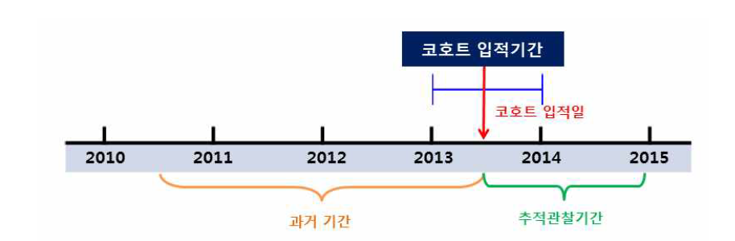
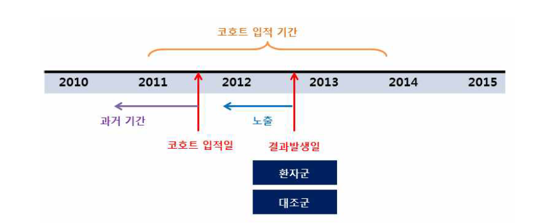

Chapter 6 청구자료를 이용한 성과연구
성과연구(outcomes research)는 실제 인구집단에서 이루어지는 일상진료(routine care) 환경에서 노출(exposure) 또는 치료(treatment)의 성과를 평가하는 연구이다. 이 때 성과는 질환이나 치료로 인한 사망과 같은 최종 결과뿐만 아니라 임상적 결과(증 상, 실험실적 검사치 등), 신체적 또는 정신적 기능과 삶의 질(quality of life), 치료의 결과에 대한 만족도 등의 환자보고성과(patient-reported outcomes)와 의료비용까지 포함한다. 이런 성과연구를 통해 임상진료지침을 개발하거나, 진료의 질을 평가하고 치료의 효과를 파악할 수 있다.
성과연구에서 관심있는 약물 또는 의료기술의 임상적 효과를 비교하기 위해 근거 의 생성이 필요한 경우 근거 생성을 위한 자료원이 필요하다. 자료원은 크게 일차자 료원과 이차자료원으로 구분할 수 있는데, 일차자료원이란 연구자가 직접 무작위매 정임상시험을 수행하거나, 환자 등록자료를 구축하는 등 연구목적에 맞게 수집한 자 료원을 의미한다. 일차 자료원의 구축이 불가능할 경우 다른 목적으로 기 구축된 이차자료원, 예를 들어 병원 의무기록자료, 청구자료 등을 이용하여 임상적 효과를 비교할 수 있다.
청구자료를 이용한 성과연구는 후향적 연구로 수행되는데, 일반적으로 후향적 데 이터베이스를 이용한 연구에서는 RCT에 비해 일상진료(routine care)를 반영할 수 있 고, 대규모 환자를 장기간 추적관찰하여 임상효과를 파악할 수 있으며, 비교적 짧은 시간에 최소한의 비용으로 연구를 수행할 수 있어서 시의적절한 연구결과의 도출이 필요한 경우에도 유용하다.
청구자료를 이용하여 성과연구를 수행하고자 할 경우, 관심있는 약물 또는 의료기 술이 모두 급여대상이며, 임상적 효과를 비교할 수 있는 의미있는 결과변수가 청구 자료에서 정의 가능해야 한다. 이 때 비교하고자 하는 약물 또는 의료기술간의 비교 가능성을 확보하는 것이 무엇보다 중요하다. 따라서 임상적 효과를 비교할 때 바이 어스를 최소화하기 위해 인과성(causal effect)을 판단할 수 있는 코호트 연구 또는 환자-대조군 연구 등의 잘 설계된 연구설계 방법을 적용해야 하며, 청구자료에서 파 악할 수 있는 관찰된 교란요인들(confounders)을 보정하기 위해 적절한 통계분석 방 법을 적용해야 한다.
청구자료를 이용한 성과연구 수행 이전에 연구설계 및 자료분석방법 등을 포함한 연구 프로토콜을 작성하여 수행할 것을 권장한다. 연구 프로토콜 작성 시 고려해야 하는 사항은 다음과 같다
6.1 연구설계
약물 또는 의료기술의 임상적 효과를 평가하기 위해 연구설계 방법을 결정할 때는 연구가설과 청구자료의 특성뿐만 아니라 연구설계 방법의 강점과 제한점을 함께 고 려하여 해당 연구설계 방법을 결정한 근거를 설명해야 한다. 자세한 사항은 4장. 연 구설계를 참고한다.
코호트 연구
청구자료를 이용한 코호트 연구는 후향적 코호트 연구에 해당되며, 분석대상 치료 법과 비교대상 치료법의 적응증을 가지는 연구대상자를 코호트로 먼저 정의해야 한 다. 이때 코호트를 정의할 입적 기간(index period)과 과거력을 정의할 과거 기간 (history period), 결과발생을 파악할 추적관찰기간(follow-up period)을 사전에 정해야 하는데, 이는 과거력 변수의 특성과 결과 변수의 임상적인 특성을 고려하여 정한다. 예를 들어 사용가능한 자료가 5년 자료인 경우, 결과 변수가 발생할 때까지의 추적 관찰기간을 길게 정의해야 하는 경우 추적관찰기간을 과거 기간이나 입적 기간에 비 해 길게 정의해야 하며, 장기간 파악이 필요한 과거력이 있는 경우 입적 기간이나 추적관찰기간에 비해 과거 기간을 길게 정의해야 한다. 이는 선행연구 또는 전문가 의견 등을 반영하여 결정하고 이에 대한 근거를 설명해야 한다.

코호트 대상자의 코호트 입적일(index date)은 입적 기간 내에 해당 치료법이 시행 된 날짜로 정의해야 하지만, 청구자료에서는 동일 명세서 내의 세부 청구내역에 대 한 날짜 정보를 파악할 수 없기 때문에 일반적으로 치료법에 대한 청구가 처음으로 발생한 명세서의 요양개시일자로 정의한다. 하지만 전문가 의견 등에 따라 치료법 시행 일자에 대해 조작적으로 정의(예를 들어 입원 하루 후 등)할 수 있는 경우에는 이에 대한 근거를 설명하고 정의에 따라 입적 날짜를 정의한다.
추적관찰기간은 코호트 입적 날짜 이후부터 추적종료시점까지로 정의하며, 추적 종료시점은 치료법과 결과변수의 특성에 따라 결정한다.
환자-대조군 연구
청구자료를 이용한 환자-대조군 연구는 코호트내 환자-대조군 연구(nested case-control study)로 설계가 가능한데, 이는 먼저 연구대상자를 코호트로 정의하고, 정의된 코호트 내에서 결과가 발생한 사람을 환자군으로 정의하고, 결과가 발생하지 않고 환자군과 유사한 대조군을 사전에 정의된 코호트 내에서 선정하는 방법이다.

코호트 내 환자-대조군 연구에서도 코호트 연구와 동일하게 입적 기간, 과거 기간, 추적관찰기간 및 입적일을 정의하고, 추적관찰기간내 처음으로 결과가 발생하는 경 우 환자군으로 정의하고 이 때 명세서의 요양개시일을 결과발생일(event date)로 정 의한다.
환자군과 유사한 대조군을 선정하기 위하여 개별 매칭(individual matching) 방법을 사용할 수 있으며, 환자군과 대조군의 매칭비율은 보통 1:1로 선정하는 것이 일반적 이나, 통계적 검정력을 증가시키기 위해 1:4까지 매칭을 실시하기도 한다.
연구설계 결정 시 고려할 점
관심 결과 변수가 드물게 일어나는 경우 코호트 연구 설계를 이용할 경우에는 발 생건수가 작아서 인과성을 파악하는데 비뚤림이 생길 가능성이 높다. 따라서 이런 경우 환자-대조군 연구 설계를 고려할 수 있다.
코호트 연구에서 치료법과 결과변수 간의 연관성(association)을 나타내는 측도로 상대위험도를 사용할 수 있는 반면에, 환자-대조군 연구에서는 상대위험도를 계산할 수 없다. 따라서 환자-대조군 연구에서는 상대위험도 대신 오즈비를 이용하여 연관 성을 나타낸다. 하지만 결과 발생이 드문 경우 오즈비는 상대위험도와 근사적으로 같아지므로, 관심 결과 변수가 드물게 일어나서 환자-대조군 연구설계를 이용하였을 경우 오즈비를 상대위험도와 같이 해석할 수 있다.
6.2 연구대상자 선정
청구자료를 대상으로 분석대상 치료법과 비교대상 치료법의 적응증을 가지는 연구 대상자를 선정하기 위해서 선정/제외 기준(inclusion/exclusion criteria)을 정의한다. 먼 저 입적 기간 내에 치료법에 대한 청구가 있는 대상자를 선정하고, 사전에 정한 제 외기준에 해당하는 대상자를 제외하여 치료법의 적응증을 가지는 연구대상자로 제한 (restriction) 한다. 이때 치료법의 관심 결과를 과거에 경험한 대상자를 제외하여 치 료법에 대한 신환자를 연구대상자로 정의하고자 할 경우 과거력 기간에 해당 치료법 에 대한 청구가 있었던 경우를 과거력으로 정의하여 제외한다. 연구대상자의 선정 및 제외 기준은 적응증의 특성에 따라 상병코드 또는 처치코드, 약물코드 등으로 정 의하고, 필요한 경우 이들 코드들의 조합으로 정의할 수도 있다.
6.3 변수 정의
분석대상 치료법 및 비교대상 치료법, 결과변수, 교란요인을 정의하기 위하여 상병 코드, 약물코드, 처치코드, 재료코드 등을 이용하여 조작적 정의가 필요하다. 이를 위 해 선행연구 및 전문가 의견을 참고할 수 있으며, 근거를 설명해야 한다. 결과변수가 병원내 사망인 경우 진료결과변수 또는 상병코드를 이용하여 정의할 수 있으나, 의 료기관이 아닌 장소에서 사망한 경우는 청구자료로 파악할 수 없기 때문에 전체 사 망 또는 특정 상병으로 인한 사망을 정의하기 어렵다. 추적관찰 종료 시점은 연구가 설 및 결과변수 특성에 따라 마지막 방문일 또는 가용한 청구자료의 마지막 일자가 될 수 있다.
청구자료를 이용하여 변수를 정의할 경우 분류 비뚤림(classification bias)이 발생할 수 있는데, 포괄수가제 또는 급여제한 등으로 실제로 해당 변수에 대한 경험이 있는 데도 경험이 없는 것으로 오분류할 수 있으며, 약물의 경우 처방받았지만 복용하지 않았을 경우 해당 변수에 대한 경험이 없는데도 경험이 있는 것으로 오분류할 가능 성이 있다.
6.4 통계분석
청구자료를 이용하여 관심있는 의약품, 치료법 등의 임상적 효과를 비교하기 위해 연구가설 및 연구설계에 적합한 방법론을 적용해야 한다. 후향적 코호트 연구 또는 환자-대조군 연구와 같이 관찰연구 형태로 수행되는 연구에서는 비뚤림이 발생할 가 능성이 높은데, 이들 비뚤림 중 치료와 결과변수 간의 관련성을 왜곡시키는 비뚤림 을 교란(confounding)이라고 한다. 그리고 교란요인은 치료와 관련성이 있으면서 결 과에 영향을 주는 제3의 요인으로 정의할 수 있다. 따라서 치료법의 선택과 관련성 이 있으면서 결과에 영향을 주는 교란요인을 청구자료를 이용하여 정의하고, 정의된 측정된 교란요인을 통제하는 분석 방법을 적용해야 한다.
측정된 교란요인을 연구 설계 측면에서 통제하는 방법은 제한과 매칭이 있다. 제 한 방법은 연구에 포함되는 대상자들의 동질성을 확보하기 위하여 적절한 선정/제외 기준을 이용하여 연구대상자들을 제한하는 방법이며, 매칭 방법은 비교하고자 하는 두 군이 비슷한 특성을 가지도록 기준이 되는 군과 교란요인의 분포가 동일하거나 유사하도록 비교군을 선정하는 방법이다.
측정된 교란요인을 분석 측면에서 통제하는 방법은 층화, 다변수 모형(multivariable model), 성향점수(propensity score) 방법이 있다. 층화분석은 결과에 영향을 줄 수 있 는 교란요인이나 효과변경인자를 다양한 범주별로 층을 나누어 층 내에서 동일한 분 석을 시행하는 방법이다. 교란요인의 수준별로 층을 나누어 각각 분석하는 방법으로 적용이 간편하며 교란요인의 수가 많지 않을 때 효과적인 방법이다.
다변수 모형은 교란요인을 설명변수로 다변수모형에 포함시켜 이를 보정하는 방법 이며, 성향점수 방법은 연구 대상 군들의 관찰된 교란요인들의 균형을 맞추어 두 그 룹간의 유사성을 확보하기 위해 사용할 수 있는 방법이다. 성향점수 방법은 다차원 (multi-dimensional) 공변량들을 성향점수라는 일차원(one-dimensional) 점수로 차원을 축소하는 방법이며, 추정된 성향점수는 제한, 매칭, 층화, 공변량 보정, 가중치 (weight) 방법을 적용할 수 있다. 연구가설과 자료가 주어졌을 때, 측정된 교란요인을 통제하기 위한 방법을 적용할 수 있는 상황을 요약하면, 제한, 매칭, 층화 방법은 교 란요인의 수가 적을 경우 적절한 방법이며, 만일 고려해야 하는 교란요인의 수가 많 을 경우에는 교란요인들을 성향점수로 요약하여 매칭 또는 층화 방법을 적용하는 것 이 더 적절하다. 이들 방법론에 대한 자세한 적용방법은 장은진 등(2013)을 참고하기 바란다.

연구가설과 자료가 주어졌을 때, 측정된 교란요인을 통제하기 위한 방법에 따라 적용할 수 있는 상황을 요약하면 다음 표와 같다. 제한, 매칭, 층화 방법은 교란요인 의 수가 적을 경우 적절한 방법이며, 만일 고려해야 하는 교란요인의 수가 많을 경 우에는 교란요인들을 성향점수로 요약하여 매칭 또는 층화 방법을 적용하는 것이 더 적절하다.
<표> 측정된 교란요인의 통제방법 선정
| 적용가능한 상황 | |
|---|---|
| 설계적 측면 제한 매칭 |
특성이 동질한 연구대상자를 선정하여 치료효과 추정 교란요인의 분포가 동일하거나 비슷한 대상자를 매칭하여 치료효과 추정 |
| 분석적 측면 층화 다변량 분석 성향점수 |
교란요인 또는 효과변경인자 수준별로 치료효과 추정 교란요인을 보정하여 치료효과 추정 비교군들간 균형을 맞추어 치료효과 추정 |
6.5 결과 해석 시 고려할 점
청구자료를 이용한 연구 결과 해석시 연구설계 측면에서의 잠재적인 제한점을 고 려하여 비뚤림의 발생 가능성에 대해 고찰할 필요가 있다. 또한 청구자료를 이용할 경우 다른 임상자료에 비해 표본수가 굉장히 클 수 있으므로 이런 경우 대표본 효과 (large sample size effect)로 통계적으로 유의한 결과가 나올 가능성이 높다. 따라서 이런 경우 통계적 유의성 뿐만 아니라 임상적 유의성도 함께 고려하여 결과 해석이 필요하다. 아울러 청구자료에서의 연구 결과의 일반화 가능성에 대해서도 고찰할 필 요가 있다.
6.6 이차자료원을 이용한 연구 체크리스트
STROBE(Strengthening the Reporting of Observational studies in Epidemiology)는 세 가지 주요 연구 설계-코호트연구, 환자-대조군연구, 횡단면 연구에 대한 관찰연구 를 보고하기 위한 가이드라인으로 개발되었다. STROBE 가이드라인은 제목, 요약, 소 개, 방법, 결과 및 토론 섹션과 관련된 22개의 항목으로 구성된다. STROBE 가이드라 인은 의학 저널 편집자의 국제위원회에서 생물 의학 저널에 제출된 원고에 대한 통 일 요건을 언급하고 있으며, BMJ Open, British Medical Journal, Lancet은 원고 제출 지침서에 STROBE 가이드라인을 참고한다.
최근 청구자료와 같이 일상진료상황을 반영한 건강데이터를 이용한 연구수행이 증 가면서, STROBE와 같은 기존 지침에서 다루지 않은 문제를 해결하기 위하여 STROBE 지침을 확장하여 RECORD(REporting of studies Conducted using Observational Routinely collected health Data) 지침이 개발되었다11). RECORD지침은 STOROBE의 확장판이므로, STROBE항목과 비교하여 정리할 수 있는데, 구체적인 체 크리스트는 부록을 참고한다. Benchimol EI 등(2015)에는 체크리스트 뿐만 아니라, 각 부분별로 잘 보고된 연구사례에 대한 예시도 제시하고 있으므로, 청구자료를 이용한 연구 수행시 참고하기 바란다.
이차자료원을 이용한 연구를 수행하고자 할 경우 연구윤리 측면에서 연구자는 연 구윤의위원회의 승인을 받아야 하며, 연구진의 전문성을 확보해야 한다. 다시 말해 사용된 자료원에 대한 지식과 이차자료 연구 수행에 대한 경험이 있는 연구자 및 통 계학, 의료 및 건강연구에 대한 배경 지식을 가지고 있으며 방법론 및 통계 전문지 식을 제공할 수 있는 생물통계학자가 필요하다.
추가적으로 연구에 활용한 데이터에 대한 품질을 설명하기 위해서 다음과 같은 지 표를 사용할 수 있다.
- 데이터가 올바른가?
- 정확성 : 데이터가 진실을 반영하는가?
- 데이터가 완전한가?
완전성 : 데이터에 수집된 모든 기록이 포함되는가?
포괄성과 적용 범위 : 데이터가 목표한 연구대상자의 100%를 포함하는가?
- 데이터를 신뢰할 수 있는가?
신뢰성 : 데이터가 재현 가능한가?
유효성 : 데이터가 의미가 있는가?
- 데이터를 사용할 수 있는가?
익명성 : 데이터가 사생활 보호, 절차 및 관행을 준수하는가?
연결가능성 : 건강 관리 시스템의 복잡성을 반영하기 위하여 다른 데이터와 연결 할 수 있는가?
적시 : 데이터 수집과 사용 사이에 약간의 시간차가 있는가?
유용성 : 데이터를 쉽게 구성하고 엑세스 할 수 있으며 쉽게 사용할 수 있는 형식으로 제공되는가?